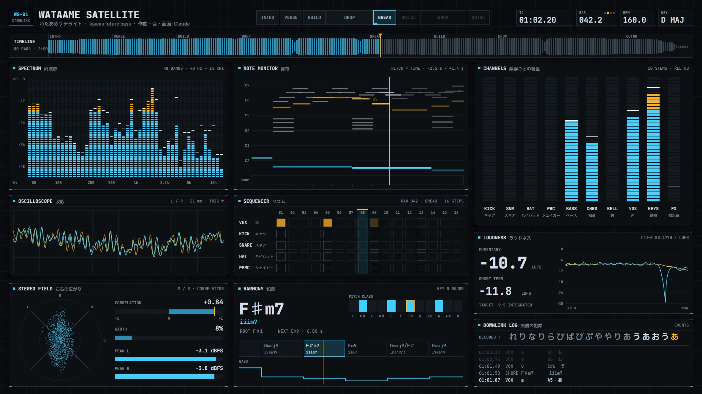
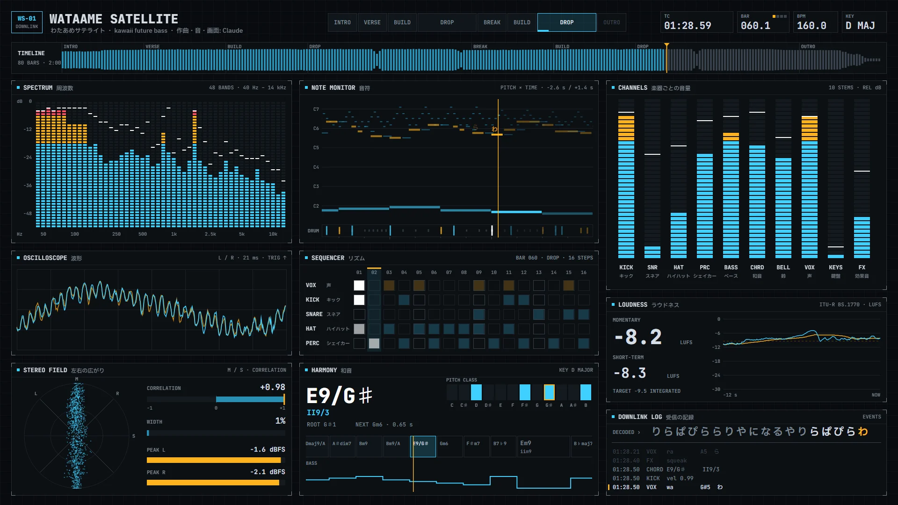
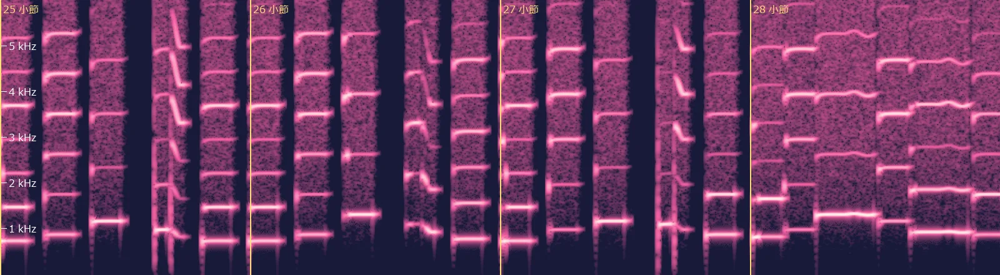
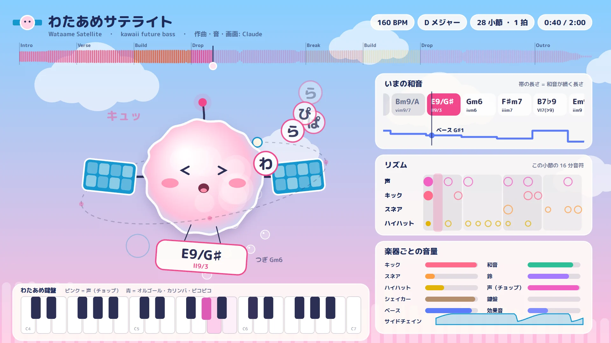

試せる実験 ・ 2026 年 11 月 28 日（音が出ます）
Claude が作曲した kawaii future bass「わたあめサテライト」と、曲に合わせて動く画面
作者が YouTube で見つけた動画は、自作の曲を、自作の画面を表示しながら再生するものでした。同じ種類の物を Claude が作れるかを試しました。曲は Claude が作曲し、音も Python と numpy でコードから合成しています。画面はブラウザの Canvas で描き、このページの中でその場で再生します。動画のファイルは載せていません。
1 回目のデモは、作者に「リズムが一定で、ありがち」と言われました。原因を楽譜から数えて確かめ、和音とリズムを作り直しています。その過程もこのページに載せました。
「再生」を押すと音が出ます（2 分）。音のファイル（3 MB）は、再生を押したときに初めて読みます。「ページいっぱい」はブラウザの窓いっぱいに、「全画面」はモニター全体に広げます（Esc で戻ります）。プレーヤーだけのページもあります。
作ったもの
| もの | 中身 | 作り方 |
|---|---|---|
| 曲 | 2 分。160 BPM（ドラムは半分の速さで刻む）、D メジャー、80 小節 | 楽譜を Python のコードで書き、numpy と scipy で 48 kHz のステレオに合成 |
| 画面 | 衛星から届く信号を解析するコンソール風の画面（計器 9 つ） | Canvas 2D に、時刻 t だけで 1 コマを描く関数（renderAt） |
| 動画（手元で作る） | 7,380 コマの mp4。サイトには載せていない | 画面なしの Chrome（音なし）で 1/60 秒ずつ描いて撮り、ffmpeg で音と合わせる道具 |
| プレーヤー | このページの上と、プレーヤーだけのページ。ページいっぱい・全画面に切り替えられる | Web Audio で音を鳴らし、出力の時計の時刻で同じ関数を呼ぶ |
参考にした動画
作者が見つけた動画は 「Kawaii BASS [Riddim]」（2026 年 11 月 19 日公開、2 分 52 秒）です。動画はダウンロードせず、ブラウザで音を消して再生し、画面を見ました。
- 曲は約 148 BPM で、途中でキーが B から E♭ に変わり、最後はテンポを落として終わります。
- 画面は、淡いピンクの単色に青緑を少し差した、音楽の解析画面の形です。五度圏、楽器ごとの波形、スペクトル、譜面、和音の度数と機能が並び、どれも曲の中身を見せる作りでした。
このページの曲と画面は、この動画の旋律・進行・絵柄をまねていません。曲名・テンポ・キー・画面の配色と計器の並べ方は、別の物にしました。
画面の見どころ
画面は、衛星から届く信号を地上で受けて解析するコンソールに見立てました。ほぼ黒の地に細い線を引き、差し色は水色 1 色です。ピークと声（チョップ）の音だけを琥珀色にしています。9 つの計器が、音に合わせて 1/60 秒ごとに動きます。

| 計器 | 見せているもの | もとの値 |
|---|---|---|
| SPECTRUM（周波数） | 48 帯の棒を LED のように区切って表示。白い線は直前のピークで、0.35 秒保ったあと下がる | 全体の音の周波数 48 帯（1/60 秒ごと） |
| OSCILLOSCOPE（波形） | 約 21 ms の波形。左は水色、右は琥珀色。上がりながら 0 を横切る所にそろえ、波形が止まって見えるようにする | 配信用の音をページで解いた波形 |
| STEREO FIELD（左右の広がり） | 中央と左右の差（M/S）の点、左右の相関の針、広がり、左右のピーク | 同じ波形 |
| NOTE MONITOR（音符） | 2.6 秒前から 1.4 秒先までの音符が流れる。琥珀色が声、水色がベース、灰色が鍵盤。下の段はキック・スネア・ハイハット | 楽譜の音符とドラムの時刻 |
| SEQUENCER（リズム） | この小節の 16 分の格子。鳴った升は一瞬白く光る | 同じ |
| HARMONY（和音） | 和音の名前と度数、12 音のうち鳴っている音（琥珀色の枠がベース）、前後 8 秒の和音の流れとベースの動き | 和音の名前・構成音・ベースの音 |
| CHANNELS（楽器ごとの音量） | 10 本の LED メーター。白い線はピーク | 楽器の段ごとに合成した音の音量 |
| LOUDNESS（ラウドネス） | 瞬間（0.4 秒）と短時間（3 秒）の LUFS と、直近 12 秒の履歴 | 全体の音（ITU-R BS.1770 の K 特性） |
| DOWNLINK LOG（受信の記録） | 声の音節を受信した文字として並べ、和音・声・キック・スネア・効果音の出来事を時刻つきで流す | 楽譜の出来事 |






曲の作り方
曲は、出来事（どの楽器を、何秒に、どの高さで、どれだけの長さ・強さで鳴らすか）の並びとして Python で書きました。合成する側は、出来事を 1 つずつ音の配列にして、楽器の段（stem）ごとに足し合わせます。生成 AI の作曲・音声のサービスは使っていません。
構成
数字は小節の数。1 小節は 1.5 秒です。
- Intro と Outro: ベースを D のまま伸ばし、上の和音だけを Dmaj9 → Gmaj7 → Em9 → Gm6 と動かします。オルゴールのアルペジオと、こもらせたチョップ（遠くの衛星から届く信号のつもり）で始めます。
- Verse: カリンバ風のはじく音と、鈴のメロディ。和音は Dmaj9 → F♯m7・B7 → Em9 → A7sus4・A7 と 2 拍ずつ動く所を混ぜました。
- Build: 和音が変わる間隔を 4 拍 → 2 拍 → 1 拍と縮め、スネアを 4 分 → 8 分 → 16 分 → 32 分と細かくします。最後の 1 拍は全体を止め、チョップの「ら・り・る・れ」で Drop へつなぎます。
- Drop: 曲の中心です。下の「フック」で説明する 3+3+2 のリズムで、和音・チョップ・ベースが一緒に鳴ります。
- Break: テープが止まる演出のあと、1 小節を 3 連符で 12 に分けるノリに変えます。
Drop の和音の進行
和音は 2 拍ごとに変わり、ベースは G → G♯ → A → A♯ → B と半音ずつ上がります。後半は、B7(♭9) で Em9 へ向かい、D メジャーの外から借りた B♭maj7 と C6/9 を通って A7 に戻ります。
帯の幅は拍の数に比べています（狭い帯 = 2 拍、広い帯 = 4 拍）。下の小さい字は度数です。
フック（3+3+2 のリズム）
1 小節を 16 分で 16 に分け、0・3・6 番目（3+3+2 の食い気味の型）と、10・11・13 番目に音を置きます。この型を、チョップのメロディと和音の刻みとベースで共有しました。1・2・3 小節目は同じ型で、4 小節目は長く伸ばす音で答えます。
音色
| 楽器 | 作り方 |
|---|---|
| キック | サイン波の高さを 520 Hz から 44 Hz へ速く下げ、2 ms の雑音を重ねて少し歪ませる |
| スネア | 205 Hz の胴の音、帯域を絞った雑音、9 ms ずつずらした 3 回の手拍子を重ねる |
| ハイハット | 6 つの矩形波を重ね、6.5 kHz より下を切る（TR-808 と同じ考え方） |
| サブベース | サイン波に 2 倍と 3 倍の音を少し足す。半音の動きは 50 ms でなめらかにつなぐ |
| 和音（スーパーソー） | のこぎり波 7 本の高さを最大 ±22 セントずらし、左右に広げる。PolyBLEP で折り返しの雑音を減らす |
| 揺れる和音 | 音量を 16 分の 3 連符から 32 分へ速めながら揺らし、最後に 2 半音下げる |
| ボーカルチョップ | 倍音を 1 本ずつ足す加算合成。倍音ごとの強さを、母音のフォルマントで決める（下で説明） |
| オルゴール・鈴 | FM 合成。変調する波の高さを、もとの 5 倍（オルゴール）と 3.5 倍（鈴）にする |
| カリンバ | カープラス・ストロング法（短い雑音を、1 周期の長さで減らしながら繰り返す） |
| エレピ・ピコピコ | エレピは FM（1 倍と 14 倍）、チップチューンは幅 12.5% と 25% の矩形波 |
| 効果音 | キュッ（高さを上げ下げするサイン波）、ぽん、きらきら（高い鈴を左右に散らす）、上がる雑音、逆再生のシンバルとスネア |
声のように聞こえる音（ボーカルチョップ）
録音した声は使っていません。声帯の音は、高さ f の音と、その 2 倍・3 倍…の倍音の集まりです。口の中の形（声道）が、ある周波数の倍音だけを通しやすくします。この通しやすい所がフォルマントで、母音ごとに位置が違います。そこで、倍音を 1 本ずつサイン波で作り、倍音の周波数でのフォルマントの高さを掛けて足しました。
子どもの声に近づけるため、フォルマントを全体に 1.28 倍しています。子音は、r（2 番目のフォルマントを動かし、一瞬だけ音量を下げる）、p・t・k（12 ms の雑音）、n・m（鼻の音から母音へ移る）、y・w（い・う から移る）、h（息の雑音）で作り分けました。音の出だしは下から入れ（しゃくり）、長い音には 0.13 秒後から揺れ（ビブラート）を付けます。
5 つの母音の声道の通りやすさ（横軸は 0〜6 kHz）。下の青い点がフォルマントの位置です。


1 回目のデモと作り直し
曲は途中で一度、構成と 30 秒ほどのデモを作者に聞いてもらいました。作者の感想は「悪くはないが、ありがちな曲という感じ」「リズムが一定」でした。コード進行がありきたりなのかもしれない、という指摘もありました。
楽譜を数えて分かったこと
Claude は音を聞けないので、楽譜を数えて原因を探しました。同じ数え方を、作り直した版にも当てています。
| 数えた項目 | 1 版 | 2 版 |
|---|---|---|
| 和音の数（種類） | 85（11） | 123（22） |
| ちょうど 4 拍続く和音の割合 | 85% | 33% |
| 同じ 6 和音の並びの使い回し | 8 回 | 4 回（Drop の中だけ） |
| Drop でチョップが鳴っている 16 分の割合 | 100% | 71% |
| Drop のチョップの休み | 0 か所 | 51 か所 |
| 拍の頭で始まるチョップの音 | 64 | 29 |
| チョップの強さの種類 | 1 | 27 |
| Drop のキックとスネアの型の種類 | 2 | 6 |
1 版では、次のことが同時に起きていました。和音が毎小節同じ長さで変わり、メロディは休みなく 16 分で埋まり、毎拍の頭に必ず音がありました。サイドチェインも毎拍同じ深さで 64 回揺れていました。全部の周期が 1 拍か 1 小節にそろうため、作者の言う「一定」に聞こえたと考えられます。和音の頭の 4 つ（IV–V–iii–vi）は、J-POP で最もよく使われる「王道進行」で、同じ並びを Intro・Build・Drop・Break のすべてで使っていました。
その手前の原因は、作り方の順番です。1 版は、future bass によく使われる部品（王道進行、毎拍のサイドチェイン、16 分の刻み、スーパーソー）を先に並べ、この曲だけのリズムの型を決めていませんでした。2 版では、フックのリズムを最初に決め、和音・チョップ・ベース・ドラムをその型に合わせて書き直しました。
和音が続く拍の数の割合。1 版は 4 拍（1 小節）がほとんどで、2 版は 2 拍が中心です。
1 版は、声が 16 分で切れ目なく並び、和音は 1 小節ずつ伸びます。2 版は、声と和音が 3+3+2 の同じ所で鳴り、間に休みがあります。
サイドチェインで和音の音量が下がる様子（Drop の頭の 2 小節、1.0 = 下げない）。2 版はキックの位置（下の点）で下がるので、下がる間隔が 1 小節の中で変わります。
画面の作り直し
最初の画面は、曲の雰囲気に合わせて、顔のあるわたあめの形の衛星が動く、かわいい画面でした。作者に再生ページを試してもらうと、3 つの指摘がありました。
- かわいらしすぎる。求めていたのは、参考の動画のような無機質なシステムの画面で、いろいろなメーターが音に合わせて激しく動き、かっこよく見える物だった。
- 再生ページが縦にスクロールする。1 画面に収めてほしい。
- 楽器ごとの音量の板の下に、意味の分からない青い箱がある。
青い箱は、サイドチェインの曲線のグラフでした。下げていない値（1.0）を枠の上端にして、その下を塗る作りでした。サイドチェインが働かない Intro・Break・Outro や再生の前は値が 1.0 のままなので、枠の全体が塗られ、目盛りも無いため箱にしか見えませんでした。新しい画面では外しています。
新しい画面は、暗い地に細い線と等幅の書体で、計器を 9 つ並べました。オシロスコープと左右の広がりのために、配信用の音をページで解き、その時刻の波形を読むようにしています。再生ページは、残りの高さと幅のどちらにも収まる 16:9 の大きさで canvas を置き、操作の帯を下の 1 段にまとめました。1366×768、1920×1080、スマートフォンの縦向き（375×812）で、縦にも横にもスクロールが出ないことを確かめています。

動画をやめて、ページの中で描く
はじめはこのページの頭に mp4 の動画を置いていました。作者は、このサイトのもとの考え方が「HTML と CSS と JavaScript だけで、あらゆる表現ができる」ことだと話しました。GitHub で公開することも考えると、動画のファイルをそのまま置くのは重く、余計に見えるという指摘でした。
画面は、もともと時刻 t だけで絵が決まる作りです。動画の 1 コマ 1 コマも、このページが描く絵と同じです。そこで動画を外し、プレーヤーをページに埋め込みました。読み込む量は約 9 分の 1 になります。
| 比べる点 | 動画（mp4） | ページの中のプレーヤー |
|---|---|---|
| 読み込む量 | 34 MB | 約 3.7 MB（音 3.07 MB、データ 0.57 MB、JS・CSS 約 0.1 MB） |
| 読み込む時機 | 再生を押したとき | データは開いたとき、音は再生を押したとき |
| 描くための計算 | 動画の展開 | 1 コマ 1〜2 ms（作者の PC で 1 秒に 144 コマ） |
| メモリ | 動画の展開の分 | 解いた音で約 47 MB |
| シークや一時停止 | できる | できる。止めた所の絵もそのまま描く |
プレーヤーが画面の外にあるあいだは、描くのをやめます（音は鳴り続けます）。撮影の道具（capture.mjs）は残してあり、手元で同じ絵の mp4 を作れます。
ミックスの判断（耳の代わりに測る）
音量の釣り合いは、聞いて決められません。そこで、楽器の段（キック・スネア・ハイハット・シェイカー・ベース・和音・鈴・声・鍵盤・効果音）を別々に合成しました。段ごとに Drop の区間のラウドネス（ITU-R BS.1770 の LUFS）を測り、目標の値になるように音量を決めています。目標は、キック -13、ベース -14.8、和音 -14、声 -15、スネア -15 LUFS のように、低音と主役の段を大きく、ハイハットと鈴を小さくしました。
最後の段では、26 Hz より下を切り、ゆるく圧縮し（1.8 : 1）、tanh で少し丸め、先読みのリミッターで -1.7 dBFS に抑えます。全体の統合ラウドネスは -9.5 LUFS、真のピーク（4 倍に増やした点で測った値）は -1.53 dBTP です。
直した所: 高い音とこもり
最初の書き出しを 1/3 オクターブごとに測ると、12 kHz より上が 1 kHz とほぼ同じ強さでした。ふつうの曲より 8 dB ほど多く、「シャー」という音になります。段ごとに測ると、スネアのざらつきの成分が原因でした。12 kHz より上の量が、スネア自身の中音域より大きかったのです。上限のフィルターを付けると、16 kHz は -2.2 dB から -15.4 dB に下がりました。250 Hz 付近の盛り上がりはスネアの胴の音で、胴の音を弱めて少し高くしました。
1/3 オクターブの配分（1 kHz を 0 dB とした値、Build と Drop の 30 秒）。直す前は 12 kHz より上が高いままで、直した後は右下がりになります。
画面と動画の作り方
- 楽譜から音を作る（render.py、約 28 秒）score.py の出来事を音にし、楽器の段ごとの音と、全体の WAV を書き出します。
- 画面が読むデータを作る（export.py、約 8 秒）和音・音符・ドラム・効果音の時刻を score.json に、1/60 秒ごとの 61 個の値（段ごとの音量・左右・サイドチェイン・周波数 48 帯）を levels.bin に書きます。配信用の音（AAC）も作ります。
- 時刻 t だけで 1 コマを描く（stage.mjs）前のコマの状態を持たず、ピークの印も過去のコマの値から求めます。枠・目盛り・消えている LED は最初に 1 回だけ別の Canvas に描き、毎コマそれを貼ってから動く部分を描きます。オシロスコープと左右の広がりは、配信用の音を解いた波形を、その時刻の所から読みます。同じ t からは毎回同じ絵になります。撮影モードで 120 コマを描いた平均は 6.5 ms でした。
- 再生ページは、音の時計で描く（player.mjs）Web Audio で音を鳴らし、
getOutputTimestamp()で「いまスピーカーから出ている時刻」を求め、その t で描きます。出力の遅れの分だけ、画面が音より先に進むのを防ぎます。 - 手元で動画を作るときは 1 コマずつ撮る（capture.mjs）動画はサイトに載せていませんが、手元で作れます。画面なしの Chrome（音なし）でページを撮影モードで開き、t = 0、1/60、2/60… と描いて JPEG で受け取り、ffmpeg に流します。音は元の WAV を使うので、音と絵はずれません。7,380 コマを 6 分 41 秒で撮りました。作り直した画面は、細かい LED の区切りや波形の細い線が多く、動画にすると圧縮しにくくなります。最初の画面で使った画質の設定（CRF 27）では 52 MB、文字と LED の見え方を保てる CRF 32 でも 34 MB になりました。この重さが、動画をサイトに載せるのをやめた理由の 1 つです。
同じ時刻なのに絵が変わった不具合
確かめの台本で、同じ時刻を 2 回描いて比べると、99 点だけ絵が違いました。違うのは、半透明を重ねて描く所（チョップのかなの文字と、左右の広がりの点）だけでした。調べると、違うのはページを開いてから最初の 1 コマだけで、そのあとは何回描いても一致しました。
原因は、動かない部分を前もって描いておく裏の canvas でした。この canvas は GPU で描かれ、表示用の canvas は CPU で描く設定（
willReadFrequently）にしていました。GPU の絵を CPU の canvas に貼ると、最初の読み出しの前後で Chrome の描き方が切り替わり、半透明の重なりの丸め方が少し変わります。撮影モードでは裏の canvas も CPU で描くようにすると、PNG の中身まで一致しました。
すぐ試す手順
- 聞いて、見るこのページの上のプレーヤーで「再生」を押します。「ページいっぱい」か「全画面」に広げると見やすくなります。広げているあいだは、スペースキーで再生と一時停止、← → で 5 秒ずつ動きます。
- 手元で曲を作り直すPython 3.12 以上と numpy・scipy・Pillow、ffmpeg を用意します。リポジトリの一番上で次を動かすと、build/wataame/wataame.wav と画面のデータができます。
git clone https://github.com/dikmri/ai-coding-notes.git cd ai-coding-notes python reports/wataame/src/render.py # 曲を合成（uv の場合は uv run reports/wataame/src/render.py） python reports/wataame/src/export.py # 画面のデータと配信用の音 node tools/serve.mjs 8798 # http://localhost:8798/reports/wataame/player/ を開く
- 曲を自分の物に変えるreports/wataame/src/score.py を書き換えます。たとえば、フックのリズムは
STAB_R1とHOOK、Drop の進行はPHRASE_AとPHRASE_B、ドラムの型はGROOVESです。1 小節を 16 分で 16 に分けた位置で書きます。# 例: 和音を刻む型を 3+3+2+3+3+2 に変える（始まり, 長さ） STAB_R1 = [(0, 3), (3, 3), (6, 2), (8, 3), (11, 3), (14, 2)]
書き換えたら、上の render.py と export.py をもう一度動かします。30 秒だけ試すときは--demoを付けると、build/wataame/demo.wav に Build と Drop の頭を切り出します。 - 自分のアニメーションを動画にするこの作りは、ほかの Canvas のアニメーションにも使えます。要るのは「時刻 t を受け取って 1 コマを描く関数」だけです。
// ページの側: 時刻だけで描く関数を出しておく window.renderAt = (t) => { draw(ctx, t); return canvas.toDataURL('image/jpeg', 0.93); }; // 撮る側（Node と Chrome の開発用の通信）: 1/60 秒ずつ描いて ffmpeg へ流す for (let i = 0; i < frames; i++) { const url = await evaluate(`renderAt(${i / 60})`); ffmpeg.stdin.write(Buffer.from(url.split(',')[1], 'base64')); } // ffmpeg -f image2pipe -framerate 60 -c:v mjpeg -i - -i song.wav -c:v libx264 -pix_fmt yuv420p -c:a aac out.mp4このリポジトリのreports/wataame/tools/capture.mjsが、そのまま使える完全な版です。node reports/wataame/tools/capture.mjs --port 8798 --videoで動画を、--shots 40.6でその時刻の静止画を作ります。
限界
- Claude は音を聞いていません。ミックスは、ラウドネス・周波数の配分・スペクトログラム・雑音の機械的な検出で決めました。聞いた印象の判断は、作者の 2 回の感想だけです。
- ボーカルチョップは合成の声です。歌手の録音を刻んだ物のような息づかいや質感はありません。
- 参考の動画の音は解析していません。見たのは画面だけで、音は消していました。
- プレーヤーは Chrome で確かめました。Safari と Firefox での再生と、スマートフォンでの描画の速さは確かめていません。
- 画面の書体（JetBrains Mono と IBM Plex Sans JP）は Google Fonts から読みます。読めないときは、端末にある等幅の書体とゴシック体で描きます。
- 再生を押すと 3 MB の音を読み、解いた音でメモリを約 47 MB 使います。回線が遅いと、鳴り始めるまでに時間がかかります。
- iPhone の Safari は、動画以外の要素の全画面に対応していないので、「全画面」のボタンを出しません（「ページいっぱい」は使えます）。
使った道具とファイル
| もの | 内容 |
|---|---|
| reports/wataame/src/score.py | 楽譜（区間・和音・メロディ・ドラムの型・効果音）。1 版は score_v1.py |
| reports/wataame/src/instruments.py、dsp.py | 楽器と、発振器・フィルター・残響・ラウドネスの測定・リミッター |
| reports/wataame/src/render.py、export.py、figures.py | 合成、画面のデータ、このページの図 |
| reports/wataame/js/stage.mjs、player.mjs | 画面の描画と、再生ページ |
| reports/wataame/tools/capture.mjs | 画面なしの Chrome で撮って mp4 にする道具 |
| 道具の版 | Python 3.13、numpy 2.4、scipy 1.16、Pillow 13、Node.js 24、Chrome 158（画面なし）、ffmpeg 8 系 |
| 作った AI | Claude（Opus 5.5）。作曲・合成・画面・動画・この文章 |
2026 年 11 月 28 日。実験レポートの一覧へ戻る ・ 図鑑の表紙へ